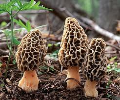
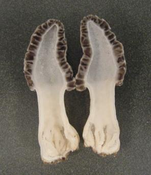

"These are the notes of mine, and I shall be collecting information from this page, and smartening it up on my public website for people to see. The page will be academia standard, and professional. This is for me."
.... famous last words. Actually, I like the charm in how I wrote and saw things. So I have changed absolutely nothing from when I last wrote this. I did move the disclaimer up though (and though I am no longer 12, all other points stand!):
A lot of people each year still die from mushroom poisoning, such as the famous Death Cap, which didn't earn its sickish tinge for nothing. Mushrooms out in this world can kill you, and it is here were I lay down my disclaimer. I am not responsible for how a person(s) may use the information lain down here, and one person should not relay wholly on this website, because it might get you killed if you make a mistake, or, indeed, if I have made a mistake and there is actually a very poisonous mushroom that looks exactly like an Oyster Mushroom. Never pick on your own. And I am just 12 years old as I am making this website, so I don't have a Lawyer.
This website has information on 12 mushrooms. In the edible section of 6 I have included information about their season, and where to find them, and detailed instructions on how to grow all of the edible mushrooms there. Identification is detailed, and I have included price on the markets as well, and poisonous look-a likes. The poisonous mushrooms have information on identification, season and where.
The mushrooms and fungi here are edible, and I shall be adding to this list later on. However, I wish to complete these species first, and then move onto secondary mushrooms, in my mind, my favourites dominating the play. Without further ado, the mushrooms.
These are the six pictures of the mushrooms I have added to this website, and these pictures lead to the mushroom you may want to view: Chanterelle, Winter Chanterelle, Morel, Cep, Oyster Mushroom and Shiitake. The link as the name of the mushrooms directs you to more pictures of the mushroom, so that you can see them clearly.
The name Chanterelle comes from greek meaning cup or drinking vessel, because of the indent in the cap.
The cap is 2cm to 12 cm across, pale to deep egg yellow, and they are never, never orange. Specimens may come close, however. Colour fades with age, and also with age comes a depression within the cap. The margin and cap are flat at first, the margin with splits and tears before it becomes wavy with grooves, and irregular.
Stem has thick, solid flesh, pale yellow to yellowish, 3cm-8cm long, tapering at the base.
The flesh ranges from pale yellow to yellowish, and smells faintly of apricots. This is an important identification feature, so take note of it.
The gills are shallow and primitive. On specimens, sometimes you cannot see them at all. They are pale yellow to egg yellow, the colour corresponding with the cap. They are blunt, forked, and there is no pattern. Gills are decurrent.
The season ranges between early summer to late autumn. Note where you find it, because this mushroom will appear there again.
The chanterelle lives in all kinds of woodlands. It prefers wet, damp soils that drain well, and they have a symbiotic relationship with birch, pines, oaks, beech, larch, and sweet chestnuts. These will grow well together. They seem to like the presence of moss, or rather, to find moss, is to find chanterelles. Though they do not grow in it, they are certainly around.
To grow these mushrooms, it seems easy enough.
Enter a forest, and find some well established trees that the fungus Chanterelle can create a symbiotic relationship with. This tree must have no other partner, or else competition will begin, making it harder for the chanterelle to get going. You want to make it very easy for the mycelium to get going.
You can choose one tree with which the chanterelle shall share a symbiotic relationship with, or you could go further and find a group of trees, all fungi free, with which the chanterelle can get along with all. That will give the mycelium a flying chance, and is a very good idea, because the chanterelle relies on several different types of trees.
Test the soil with your fingers. It should be dam and moist, and the area should be dark.
Then scatter around an old chanterelle near the trees it is going to get roomy with, first making sure that it is a chanterelle. Split open the mushroom and kick it around. The chanterelle doesn't have as many spores as say a horse or field mushroom, so that make it harder to reproduce.
Check on the spot every now and then, looking out for chanterelles. When they are fruiting, collect chanterelles by twisting of the caps, not with a knife, because otherwise the mycelia may be damaged underneath the ground with rot and that will affect the crops of other chanterelles. Do not tread on the ground very hard when they are fruiting, because you will be squashing upcoming chanterelles if you aren't careful. Return to the same grounds once every two to three weeks, somewhere in between, because you could compact the soil and damage mycelia growth. You might be able to return more often, depending on whether you 'dance' lightly along the ground.
Chanterelle Cantharellus cibarius is on the same list of prized, restaurant-worthy mushrooms not to far behind the white truffle, morel, and sulphur polypore, all known for popularity and fine taste. The chanterelle costs around $80 to $90 in melbourne and good markets. ( The truffle costs $1,000 to $2,000 a kilo, the morel $150 to $200 per kilo.)
Two mushrooms are confused with this mushroom, the Jack'O lantern and the False chanterelle. Both are inedible, and dangerous. But however, once you see the fake(s) alongside the chanterelle, it is very easy to see the differences.
The name (infundibuliformis) comes from the formation of the cap, it being held upright and funnel-like. This mushroom is also called YELLOWFOOT because of its sometimes bright yellow stipe.
The cap is 2 - 5cm across, thin, dark, dirty brown to brown yellow, convex with central depression ageing to wavy margin and funnel shaped cap. Thin fleshed. Paler coloured margin than rest of the cap.
The stem is grooved and irregular, sometimes bulbous, long, hollow, and flattened. Bright yellow to dirty yellow. It is hollow at maturity, and sometimes in young specimens.
The flesh is yellowish, thin, bitter tasting raw, tough and peppery. Smells aromatic.
Gills are yellowish turning grey, thin and vein like, decurrent and forked. Spore print is yellowish, or pinkish-white. Unremovable from the cap without ripping.
late summer to late autumn. Though this mushroom is quite small, the quantity of the mushrooms makes up for this, as they can come in troops of a hundred. Note where you have found this mushroom, because they will appear there again.
In wet, damp, moist forests, either coniferous or deciduous forests. It is saprotrophic, meaning it lives on dead or dying trees. You will find them next to and under coniferous trees such as pine and spruce, and also beech. They like foggy forests and will mostly be covered with damp leaf litter and moss, perhaps by a stream, and they like acidic soils.
Unfortunately there isn't much light on how to grow the winter chanterelle. It is hard because the winter chanterelle can have a relationship with trees such as the pine, but also grows on the dead or dying tree stumps. I think the best way in which to grow these would be to get a mossy dead log and bang in mycelium dowels, but that is an idea just off the top off my head. Needless to say, I have a book on the way in which I shall look up how to grow them.
Restaurants in Melbourne have seasonal use of these fine mushrooms; over in French, they are a delicacy and first class, and at the right place in Melbourne, they can sell for ??
This seems a very food mushroom to start out with, as there is no poisonous look-likes.
 Morel
Morel
Cap or fruiting body is 50 - 200mm high. Can be ovoid, round, largely conical, but the overall shape is pointed. Young specimens very dark yellow brown pits, with blunt ridges and irregular honeycomb-like pits. Medium aged specimens pale brown buff still with blunt ridges, ageing to yellowish-brown with sharp ridges. The cap joins the stem without overhang. Note this in specimens because this is a very important identification feature against the False Morel, Gyromitra esculenta. The cap is completely hollow.
Stem quite bulbous, cream to whitish-ochre, very very slightly scurfy and hollow. Note on this, too, because the False Morel when cut across only has hollow chambers within.
The flesh is white to cream within the mushroom.
The season is all through spring, and late spring early very early summer, around St.Georges day, along with St.Georges mushroom.
The habitat is very variable, in shrubs, open woodland and in both coniferous and deciduous forests, path edges, dis-used railway lines, waste grounds, old logging sights, growing with preference of chalky soils and in the direction of the prevailing winds, in association and found growing with dead Elms, old apple trees, live elms and ashes. Morels also appear when the soil has been disturbed, and after forest fires.
This is a very happy mushroom to grow, but it requires, as always, a lot of patience, only this time one might have to wait for several years before the first flushes of morel growth. This is a very easy method, and will not require much work on your part. Though not very reliable, it is by far a very easy way to grow them. You would have to start this process between summer and autumn, and the garden bed has to be in a shady spot.
Prepare some clean water without chlorine in a food-safe container such as a glass bowl. The ingredients you will need is a pinch of salt, and a tablespoon of molasses. Add these to these water, and stir. Not much of both is needed, so don't go heavy handed or else you will upset the spores. The salt is to stop bad bacteria getting to the sores, and the molasses is there to feed the spores yum yums.
Now add your mushrooms to the water. They should be mature, and healthy. Nothing rotting or half dead, just fresh, morel specimens. Let the mixture sit for 1 to 2 days in a mild temperature place. Do not leave it any longer, or else bacteria will start to make trouble.
Meanwhile, prepare the bed that they will be growing in (the morels). The bed should be about a square metre, give or take a bit, and it should be in a fairly seasonal spot, a place where you can tell the difference between spring and summer and autumn and winter. Combine sandy soil with peat moss, and ashes from a fire of wood, because they are known to spring up after a fire, and it will be a great growth starter. You do not want the soil to clay-like or rocky, and you want it to drain well.
1 - 2 days later, now put on gloves, and place a garbage bag (empty) close by the container, and strain the mushrooms with a cheap sieve, out of the water. Place the mushrooms in the plastic bag, and throw out, and disinfect the sieve with Nappy-san in a container.
The liquid that is still in the mushroom container will full to the bursting of millions of spores. I would pour this liquid, gloves still on and protective clothing, into a cheap Safeway's sprayer. Now you can spray that mixture onto the garden bed evenly and thickly, or just dump the spore filled water onto the garden bed (or on your tree. To do this, you just plant the tree normally as you would do, with a little bit of the morel garden bed mix, the roots ). Mix the soil around and move it about, to get is spread all throughout. Cover the top with wood chips of elms, apples, or ash trees, because the morels like those trees, and grow with happily with that wood stuff. Follow instructions from the manuals of morel kits, and take care of the morels.
This is delicious mushroom has fast spreading mycelium and once it gets going it will take over and grow tonnes and tonnes of mushrooms for you. Remember: it might not work because the spores are so young and new in this world, and you have a better chance with spawn, however this is a very cheap way of doing it.
If you don't want to grow morels straight from a garden bed and do not fancy your chances with the spores, try infecting the roots of a young tree with the morels spawn, a more reliable way to go about things because the spawn is older and with mycelium to boot. You will need a very young elm, apple, or ash tree with good root stock, or a dying elm tree. You will need morel spawn. I suggest getting it from a morel kit or you could try making the spawn yourself.
Here is what you do. Plant the tree with the spawn all over its roots, and then care for that tree as you would if it hadn't any spores. This, too, is easy, requires a lot of patience as always, but if you care for the young tree, you will have tonnes and tones of morels - in a few years!
Up to $200 per kg, ranging between $150 to $200 a kg, usually. However, if someone in Melbourne or something offers you over $200, round up your price a little higher!
The false morel is extremely poisonous and deadly. There are other many more types of 'false morel' but the False Morel, Gyromitra esculenta is the worst.
Probably one of the most sought for mushroom, on account for its size, weight and meaty taste, the Cep wasn't named edulis for nothing! With specimens capable of reaching a kg, it is hard not to cover them with a bit of leaves and come back next day, however, they are sought after indeed in the maggot world and all other creatures in the woods, so when you uncover those leaves again there might only be crumbs left. When you have found one, the best way to pick it is to cut with a knife the stem off, leaving the mycelium roots to do their thing.
The cap is 60mm - 300mm across, light brown, the colour of a fresh baked bread, the cap darkening as it opens up to a darker brown, sometimes reddish, the cap margin pale. Very young caps often with a whitish bloom, and this is lost as the cap ages. In wet weather the cap becomes greasy and slightly sticky, and it dry wether it looks velvety. The cap is darker when it is found underneath conifers.
Stem 30mm-230mm long, bulbous or potbelly, markings and fine light brown coloured network along the stem, more distinct towards the cap.
Flesh a clean white, unchanging as it ages or when bruised: some may bruise or cut light brown. Flesh firm and thick, getting spongy with age. Taste and smell pleasant.
Pores quite small and round, turning light yellow with age, bruising no colour whatsoever. Pores age from yellow to greenish-yellow. Tubes white to yellow-grey ish.
The season is from summer to late autumn, and they are common, often in troops of two or three, but never more.
Coniferous forests, broad-leaved forests and mixed woodlands, along grassy paths. It is mycorrhizal, grows with and around pines, spruce, hemlock, chestnuts, oaks and beech.
There is this one way, but it might not work because the Cep is a mushroom that grows in partnership with a tree, not cardboard. However...
First of all, soak a piece of cardboard 6100mm long, 9000mm wide in clean, chlorine-free water, and rip cardboard away to reveal the ribbed side.
Take the cardboard out of the water, but while it is still wet, spread sawdust infected with Cep spores evenly over the ribbed side, thickly coating the cardboard.
Now wrap the cardboard up tightly, the ribbed side curling inwards, the spores wrapped up tight. Holding it down wrapped tightly, secure the cardboard roll with tape, gaffa or something like that.
Now keep the cardboard in a place where it is always between 60 and 64 degrees Fahrenheit with a 95% humidity level. Ideas of such a place might be a mini green-house.
Now all you need to do is spray the cardboard roll to keep it moist with filtered chlorine-free water, and wait for mushrooms to appear. Good luck!
No idea, but I saw an add on eBay saying for 20g $6.40. That sounds pretty expensive.
This is one of the safest mushrooms ever to pick for the table because it has no poisonous look a-likes at all! There is only one mushroom however, named Bitter Bolete. As one might imagine, it is incredibly bitter, but can be told apart from the Cep by the fact that Bitter Bolete has pink pores and an unusual pink spore print. Quite strange, but there it is!
60 - 140mm across, fan like, convex then as ageing becoming flatter with a slight depression. Wavy at the margin, splitting with flutes and grooves as the mushroom ages. The colour can be quite varied, from a bluish-grey, bluish, or brownish, or from a blue-grey to a grey-brown.
The stem somewhat absent, white and wooly (as like cotton) at the base. At an excentric or lateral angle from the host tree.
The flesh is white with pleasant smell and taste.
The gills are decurrent, white at first ageing to yellowish colour. Spore print lilac.
All year round. They grow in large numbers, and will grow there in the same place for many years. They are common.
In large clusters, growing on top of each other, on dead or decaying trees still standing or on logs. Commonly growing on beech trees, they can also be grown on other trees, though especially elm.
Simple. Very simple, as the Oyster mushroom is one of the most cultivated mushroom other than the ordinary 'mushroom' we are used to seeing. This way is by growing oyster mushrooms in straw, which is a much cheaper than buying logs, (but I am going to include that too,) and in a a year or less, you should be harvesting your own mushrooms!
Here is the straw way. First of all, you need as much straw as you want, but remember this: the more substrate there is in which the mushroom can grow, the better the mushrooms will grow, and the more Oyster Mushrooms will be produced. But it has to partially fill a plastic bag, like a garbage bag, it has to fill a large, food-safe pot you have got, and it has to be in pieces up to the size of your palm, and no bigger. Dunk the straw into the pot, and cover with chlorine-free water and lace over high heat. No chlorine because the mushroom spawn won't like it much.
Keep water boiling until the straw is tender and such what, strain, and allow the straw to cool to room temperature. Chuck in the straw into the garbage bag, and chuck in the spawn. Shake it around and around until your arms ache (like mixing bicarb into your flour to make it self raising)
Roll the top of the bag down to the top of the straw, and secure with tape. Now make slits into the bag all over, and place it somewhere cool, moist and dark like a cellar or a shed. Keep an eye on the bag every few days, and water it to keep the straw moist.
After two to four months, there should be mushrooms. You pick them by grasping the mushroom at the base, and twisting gently. That way, you will not be damaging the mushrooms mycelium, and you will get more harvests.
I think this is a much nicer way to do it because although you have to wait longer, this way, they fruit longer, up to five years, but with the other way, well - its not going to be long before the mycelium take over the entire straw bag and stuff. And its prettier.
Anyhow ... you want to choose a log that is something the Oyster mushroom likes to grow on, elm, beech, and ash should be quite good, that kind of thing, from a broadleaved tree, about 900mm to 1200mm long, and 360mm wide.
In either winter or spring, find a log of that sort with some cracks in it (small) to help the Oyster mycelium grow, or make some in there yourself, then allow log to age for up to three months, before drilling into it.
Drill holes in the log, (the size of spawn dowels so you can get them in,) drilling 50mm down into the wood and 100mm apart, row by row in a diamond pattern. Now insert the Oyster mushroom dowels into the holes, pushing them all the way down with a mallet or something. At the ends of the log, insert plugs under the bark, all along the circumference, or drill another hole bang straight in the middle of the wood and fill it with a dowel. Now melt some wax, whether cheese wax, bees wax or candle wax, and paint it over the dowels, so that the Oyster mushrooms get no competition with other fungi.
Place the logs where rain will get to them, watering them every three to four days in a very dry season or somet láke tha', and cover them with straw or other spongy or cellular material to protect the logs in freezing weather. Make sure that water is able to escape from the logs and stuff. Put them in sheds or garages in really really cold weathers.
Pick your mushrooms after 9 to 12 months. Once it is going, the log will keep for 4 to 5 years. The season is from spring to autumn. Have fun!
$45 per kg at a regular supermarket.
This is a pretty good mushroom because there isn't anything you can confuse it with that is bad: perhaps the only one I know of is the Pleurotus cornucopiae, a delicacy and edible family member of the oyster mushroom.
A variety of the shop mushroom argaricus bisportus, this mushroom is simply a fully mature Crimini.
To grow Shiitake mushrooms you need fresh logs of white or red oak, in the depths of winter, which have healthy bark and aren't soft or mouldy but certainly dead, and they need to be 2032mm thick, and 900mm long.
Cut the log into 100mm pieces. Drill holes into each piece of wood, every 50mm using a 3/4 inch drill bit, in a diamond pattern to get as much capacity out of it as possible. When you have done that, fill the holes with dowels and ensure they are tight and snug within the wood. Seal the holes with melted beeswax, and then when the beeswax has solidified, soak the log pieces in a bath tub full of non-chlorinated water for 10 hours.
Pile the logs somewhere shady where they cannot get burned, and then wait for several weeks for the shiitake to begin to fruit. If the weather is really hot water the logs down with some non-chlorinated water.
$50 per 1kg.
None that I know of.
A lot of people each year still die from mushroom poisoning, such as the famous Death Cap, which didn't earn its sickish tinge for nothing. Mushrooms out in this world can kill you, and it is here were I lay down my disclaimer. I am not responsible for how a person(s) may use the information lain down here, and one person should not relay wholly on this website, because it might get you killed if you make a mistake, or, indeed, if I have made a mistake and there is actually a very poisonous mushroom that looks exactly like an Oyster Mushroom. And I am just 12 years old as I am making this website, so I don't have a Lawyer.
Cap. 40mm to 120mm across, convex then flattening, coloured variably, but mostly greenish or yellow with olive tinge turning dirty brown. Smooth, slightly shiny when wet, cap becoming lighter, caps often with a streaked appearance because of radial fibres.
Stem is 50mm to 125mm long, white, faintly banded and flushed with cap colour, (paler version) sometimes hollow. Stem thickens towards basal bulb, which is encased in a white, sac-like vulva bag.
Flesh white, yellowish below the cap cuticle, smell sickly sweet, strengthening after collection.
Gills are free from the cap, white, aged specimens sometimes with flesh coloured tinge, quite crowded. Spore print is white.
Early summer to quite late autumn, but however, never ever let your guard down. If you see something that looks like a Death Cap, do not even come within a metre of it. The are common.
Death cap grow in deciduous mixed forests, growing around oaks. For this reason never ever go near a mushroom under an oak tree unless you know exactly what you are doing. I cannot stress this enough.
Quite easy, in fact, to tell the difference between the Morel and the False morel. For a rule of thumb, false morels differ from the true morels by 1:False morels caps bulge outwards with lobes and flaps, yet the true morel has pits and ridges, and 2: False morel caps hang free from the stem, whilst true morel caps are joined to the stem.
This mushroom is deadly poisonous, but the poison acts different from a quick hit and your dead. This mushroom has a cumulative poisoning system, because with a number of people whom ate this mushroom after double boiling reported being okay, however when they ate the mushroom a second and third time they got poisoned. This mushroom is deadly.
Cap 30 - 90mm across, irregularly lobed and brain like, with a squashed appearance. Reddish brown or darker. The cap hangs free from the stem like a skirt. In cross section, the inside looks slimy and brain like.
Stem is 20 - 40mm long, and grooved like the morel, Morchella esculenta and elata. In cross section, the inside is cottony and pale flesh coloured, with pockets of hollow chambers. The stem is connected only to the middle of the very cap.
Flesh is pale flesh coloured within the stem.
Spring. They appear in the same spot occasionally.
They like sandy soils, and row with association to and near conifers in general, but especially pines.
| Comparison table between Morel and the False Morel | |
|---|---|
| Morel | False Morel |
| The morel's cap joins to the stem without overhang. | The False morel's cap hangs free from the stem like a skirt. |
| The Morel is completely hollow. | False Morel's have only hollow chambers within the stem. |
| The Morel has pits and ridges along its cap. | False Morels never have pits or ridges, instead lobes, flaps, stuff that makes it look very brain like. |
| The morel doesn't look as though it is bulging out at you. | The False Morel does, on top of the look that it is half squashed. |
| The Morel is a brown, whether lightish or darkish, but never reddish. | The False Morel is reddish-brown and darker, never brownish or brown. |
This has to be one of the most fabled and recognised mushrooms in this world, its bright scarlet cap and the snow white dots on the cap make it truly magnificent to see in the wild, amidst all the forest greens and browns. It is called Fly Agaric because back in medieval times, people used to break the caps up into platefuls of milk, and this would stupefy flies is they came to drink it.
Another reason for the name Fly Agaric, is because of the medieval belief that when you are mentally impaired or crazy it is because a fly has entered your head. This is connected with the Fly Agaric because two of the symptoms of poisoning is dizziness and hallucinations. This is a mushroom given in small doses in Siberia by shamans to induce hallucinations. The Sami people feed reindeer with it because they like it so much, and this makes the reindeer easier to herd. This mushroom is very dangerous because it can considered as bad as a "magic mushroom" and also the toxins in the mushroom can vary amazingly between specimens, therefore each Amanita Muscaria should be viewed as deadly poisonous.
The cap is 80 - 200mm across, cup-shaped, globeous or hemispherical at first then flattening, or becoming flat. Bright scarlet, in wet weather the colour fades to orange to pale orange. Speckled with remnants of the veil, which is white, these can be washed off in the rain.
Stem is 80 - 180mm long, with a bulbous swollen base, white, with a floppy ring attached to the highest part of the stem, the apex, which can become flushed yellow after colour has washed off from the cap in rain and onto the ring. Stem covered in shaggy remnants of the veil, as is base.
The gills are free from the stem, and are white. The spore print is white.
The flesh is white, tinged red or yellow below the cap cuticle. Taste pleasant, smell indistinct.
The season is from late sumer to late autumn. It is very common, and many at various ages will be found growing together in a group.
In many types of forests and trees, but usually with birch. The ones in this picture were in a redwoods forest.

20 - 80mm across, margin in-rolled at first when young, flat or convex to slightly-funnel shaped. Orange-yellow to orange, NEVER ever yellow. Finely downy. In large false chanterelles, the cap is more grooves and fluted like the true chanterelle.
Stem is 30 - 50mm long, often curved, colour corresponding with the cap or tones darker.
Flesh is yellowish to orange, tough. Smells and tastes mushroomy.
Gills are close, dark orange to orange, forked, soft, narrow, crowded and decurrent. Spore print is white.
Summer to late autumn. They are very common, and often False Chanterelles will be found growing quite close to the true Chanterelle. Be very careful.
In heathland, and coniferous woodlands, under pines and birches particularly.
| Comparison table between Chanterelle and the False Chanterelle | |
|---|---|
| Chanterelle | False Chanterelle |
| The cap of this mushroom is never orange. | The false is orange-yellow but never yellow. |
| No finely downy cap. | The False Chanterelle does. |
| The Chanterelle smells faintly of apricots, and has fragrant wafts. | The False Chanterelle smells mushroomy. |
| The spore print of the true Chanterelle is pale cream. | The spore print of the False Chanterelle is pure white. |
| The Chanterelle has no true gills. | The False Chanterelle had gills, and these do not run down the stem of the mushroom. |
The cap is 80 - 300mm across, almost white, but sort of greyish, flushed pale browny (buff) or dark chocolate grey (sepia). Commonly flushed faint red at the margin,
The stem is 60 - 90mm long, usually swollen with markings close to the base of the stem. At the highest point of the stem the colour is a saffron yellow to a lemon-yellow metallic look, and then for the base of the mushroom the colour is blood red with orange brown flushes at the base here and there, and the whole stem seems to be covered with a red-veined network. It can have a pot belly and ranges between 50 - 110mm wide.
The flesh tastes and smells unpleasant in all parts of the mushroom, but the colour contrasts quite so within the mushroom. Pale straw to saffron within the cap. The stem is white or pale lemon and the flesh stains in time to a sky blue on cutting. There are rusty coloured patches within the stem, and there is a dirty buff at the base of the stem, ageing to blue-green, or blotched red.
The pores (openings of the tubes ) are small and round, blood red going orange towards the margin of the cap. Bruising greenish, and ageing to a orangish tinge. Tubes are yellowish green ageing to a dark olive-y colour. Blue on cutting, the spore print is olivy-browny-walnut.
This mushroom is seen in summer, but it is rare - in fact, on the Red Data List.
id="abstract"Yet another reason to stay away from oak trees, which are known for sporting poisonous mushrooms. These mushrooms grow with association to broad-leaved trees, especially oaks and beeches. THey prefer chalky soils in parts of the forest, or clearing which has sunny spells in the days.
 Jack O' Lantern
Jack O' Lantern
This mushroom is called Jack O' Lantern because of the bioluminescent glow from the gills, which shows up after the sun goes down, and when the spores are mature. This mushroom is poisonous, but whilst it will not kill you, it will leave you extremely sick, ill in bed for days.
The cap of this mushroom is 50mm to 100mm and bright orange. The middle of the cap is very depressed.
Stem is paler in colour than the cap, 40mm - 140mm, wavy and at the base, tapering.
Flesh is yellowish, darkening towards the base of the stem. Taste is indistinctive, whilst the smell is strong and foul.
The gills are golden to orange, and are decurrent. The spore print is white.
Found in Britain, at the bases of trunks of trees, or at the roots of certain trees, near aks and chestnut trees.
Autumn. They are very rare.
| Comparison table between Chanterelle and the Jack O' Lantern | |
|---|---|
| Chanterelle | Jack O' Lantern |
| The cap of this mushroom is never orange. | The Jack O' Lantern is bright orange, and never yellow. |
| The Chanterelle smells faintly of apricots, and has fragrant wafts. | The Jack O' Lantern smells foul and unpleasant. |
| The Chanterelle "gills" are forked, and very shallow. | The Jack O' Lantern has true gills, and these are golden or orange, and never forked. |
| The spore print of the true Chanterelle is pale cream. | The spore print of the Jack O' Lantern is pure white. |
I have found all these books and websites useful; I recommend them again to myself, if I ever forget information unwritten.
www.mushroom-appreciation.com - How to grow morels
www.mushroomprints.com - Spore prints
www.ehow.com - Generalised theory to growing mushrooms
gardenofeaden.blogspot.com.au - Growing mushrooms
www.idmushroom.com - Mushroom terminology
ruralaction.org - Oyster Mushrooms grow
herbs-treatandtaste.blogspot - Chanterelle find
herbs-treatandtaste.blogspot - Truffles
www.gardenguides.com - Growing Chanterelles
Phillips, Roger - Mushrooms.
globalcreature.blogspot.com.au?
Jordan, Peter - Peter Jordan's wild mushroom bible
www.mushroom-appreciation.com - Chanterelles
mushroom-collecting.com - Mushroom collecting Trumpets, Chanterelles, winter chanterelles
www.fungi.com - Supplies for those lucky bastards in Europe
www.michiganmorels.com - Morels
wildandslow.com - Ceps
www.michiganmorels.com/morels1 - Morels information
www.waimeatrading.com.au — Fresh morels, slippery jack, chanterelle
Sorry about this, but before with the Amanita mascara, I thought it best that if you click on a link and then that brings you here for the pictures, it would be much more easier - I have put some descriptions with the pictures, so you know what you are looking out for in the pictures, what it is I am trying to point out to you.
Note here how the gills are the same colour as the cap of this mushroom. If you looked closely, you will see that the gills are also forked. The colour of the cap is a very rich, egg yolk yellow, and they are shown very clearly decurrent.
Here, also, we can see that the margin of this mushroom is fluted, ruffled and curved and curling.
Here, the gills are like faint wrinkles along the surface of the underside of the mushroom - note how they fork near the margin of the mushroom's cap, and the ruffled looking margin.
In this picture, note how the gills look like they have been covered with fine chalk. They are decurrent, like the chanterelle. Their lilac-grey colour looks as though is has been pastelled on. The very center of the cap has an obvious indent, like someone had dropped a pie-weight down in the middle, and the winter chanterelle has grown like that.
Here the stem is a dirty bright yellow, and in this picture you can see it clearly tapering.
The irregular pits and ridges in this mushroom is a fantastic give-away that it is the morel. The overall cone shape, too, is something that marks it out as well. Note how there isn't bulging outwards curves, or flaps. It instead is rather honey-comb like.
This mushroom, also, isn't remotely reddish-brown or reddish. This is a brilliant identification feature, because the False Morel is indeed reddish or reddish brown.
This is a middle aged morel, the colours aren't dark as they are when the morel is a baby, and the ridges aren't pointing and jagged.
RIGHT:Now these mushrooms you can see quite clearly have a swollen stem. It is untrue that these mushrooms only grow in groups of two and three only - when they want too, there can be half a dozen packed up tightly next to each other - just trawl Google for a while, you'll see.
These mushrooms are old-aged. You can tell because of the jagged ridges, the darkened colour of brown-yellowish, and the almost blackish-brown pits of this mushroom.
Note too, that from the cap to the stem, there is no overhanging part of the cap. The cap connects directly to the stem. Anything that you see you think is a morel which DOESN'T do this - leave it alone. It will very much be a mushroom you don't want to play with.
This is a picture of a hollow morel. A False Morel will not look like this at all. A morel is entirely hollow, just like this mushroom. Sometimes there will be clutter in the middle, and you just have to scratch this out.
This mushroom is spectacular. Note the fine network over the bulbous stem near the middle of the stem, and the streaks of brown clustering at the stem apex. The brown steaks can differ quite dramatically, but it is an easy mushroom to tell from any others. Porcini underneath conifers have darker streaks than those others found underneath deciduous trees.
On this mushroom you can clearly see the sticky-cap look that the Penny Bun gets in wet weather. This mushroom would feel "tacky" if you were to touch it. It has a fresh baked bread look, too, the top of the mushroom a little burned and crusty - hence the name, Penny Bun. There is also just a little bit of shine on the cap, too.
Note the margin of the cap where it becomes whiter, and where you can see the pores of this mushroom, pale creamy, small and round. These will not bruise any colour, or pigment when either bruised, cut or minced.
Now with this mushroom we can clearly see the pores. Note the younger, more pale, creamy colouring - this is a younger specimen. Here we can also see very clearly the network I keep going on about. Remember: These do not bruise or change colour at any time. Anything that does, drop it immediately.
Here we can see very clearly the view of the gills. These are facing us, and we can see them running down the stem that is there. The gills are slightly yellowish, though cream is the most outstanding colour here. Note that the margin of the cap is rolled inwards, and that the gills are decurrent. The grey-blue coloured lip of cap is a common oyster mushroom colour.
With this mushroom you can clearly see "shell" look this type of mushroom can get, the wavy edges. This mushroom is an almost purple colour, but more a greyish-lavender. These mushroom can grow in dead or dying trees, and doesn't mind wet and cool conditions.
Though I have no story on identification for you, I do know that the Shiitake mushroom is one of the best mushrooms for you. It contains special chemicals and goodies within it, and has an anti-tumour and cancer affect. It lowers cholesterol, it is full of vitamins and minerals, and if you want to recover from the flu or cold, they are the best thing.
This is an extremely deadly mushroom. Toxicity symptoms occur between 8 - 24 hours. If you think you have eaten this mushroom, get yourself to hospital immediately.
If you stumble across this mushroom, you will know it by the sickly, off yellow-green colour - that is its common colour. It can be also paler. Note the fibres along the cap, these are more easily seen on the smaller mushroom on the larger one.
The white, closely packed gills and the large, white floppy rings appear on every Death Cap mushroom.
I said that the colour of the cap is often mirrored onto the stem. Well here, note the same colour banded onto this mushroom, and how the scales on the mushroom have taken on the same tone as the cap.
If you are uncertain about identification, gently with a stick push back the soil and see whether there is a lump-like bulbous bag. This the vulva bag, like this one here. Do not touch it